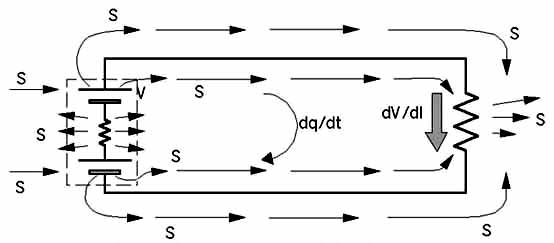

| Note: EM
texts err in showing the battery "gate" as the source of energy. Note: From particle physics, opposite charges -- such as are on the ends of a dipole -- constitute a proven asymmetry in the fierce virtual photon flux of the vacuum. So a dipole absorbs virtual photon energy from the vacuum, transduces it to observable photon energy, and pours out real observable EM energy in all directions, continuously. In short, every dipolarity already freely "extracts" and gates EM energy flow from the seething vacuum, continuously. Every battery and generator is already a "free energy" source of extracted and gated EM energy from the vacuum! All EM fields and potentials and their energy are established by the flow of energy from their associated source charges. Figure 1. Poynting S-flow along a simple circuit |